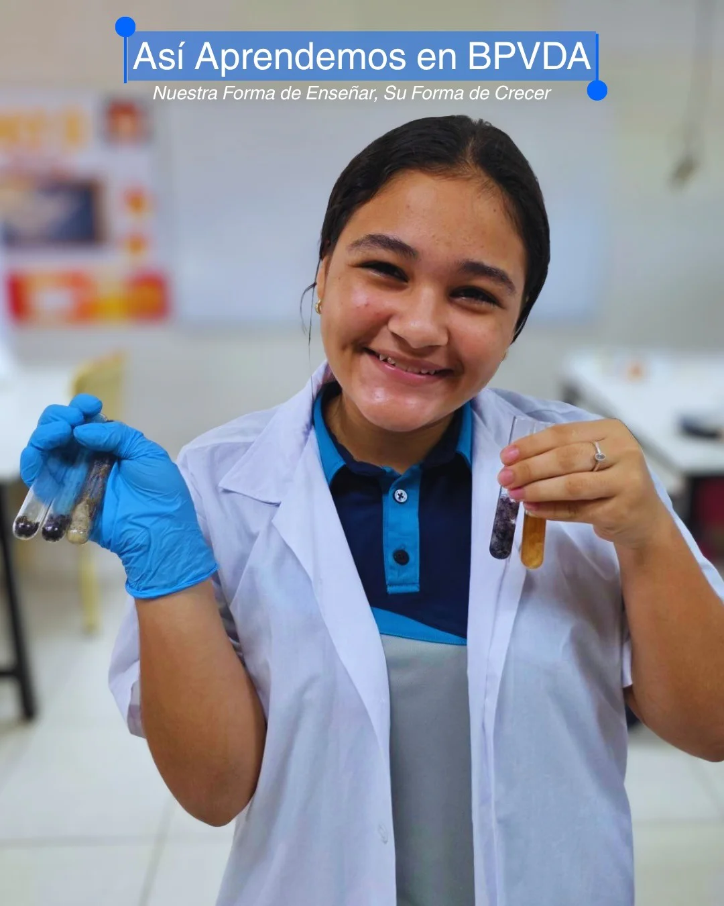
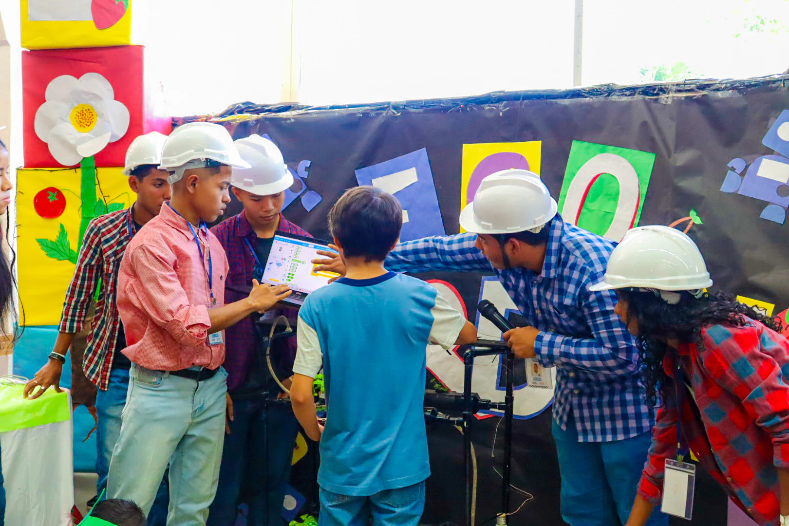
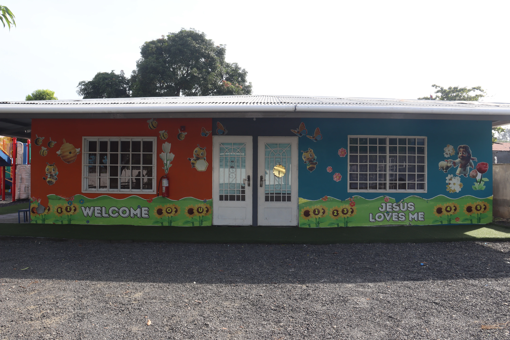
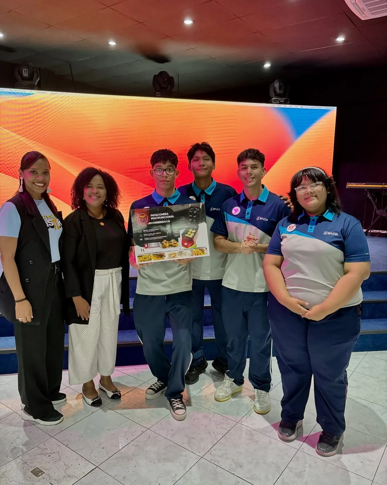

Una comunidad cristiana que acompaña a niños y jóvenes para transformar el conocimiento en acción y cada talento en una forma de servir. Formamos estudiantes capaces, responsables y con compromiso social.
Educamos con excelencia, fe y valores cristianos, acompañando a cada estudiante en su crecimiento académico, personal y espiritual. Promovemos el amor al prójimo, la responsabilidad y el servicio.
Formamos líderes con carácter y propósito, preparados para aprender, convivir y responder a un mundo cambiante. Buscamos que cada etapa fortalezca sus conocimientos, habilidades y visión de futuro.
La esperanza, la dignidad y la mejora constante orientan la experiencia diaria de cada estudiante y cada familia. Estos valores se reflejan en la forma de aprender, convivir y contribuir.
Conoce nuestro proceso de admisión, visita el colegio y conversa con el equipo que acompañará a tu familia. Queremos que este primer acercamiento sea claro, cercano y enriquecedor.
La disciplina, tarde o temprano, vencerá a la inteligencia
Yokoi Kenji — Motivador
01 — Nuestra experiencia
Una escuela se reconoce por lo que hace posible.
Nuestra promesa
Unir fe, conocimiento y acción para que el aprendizaje tenga sentido dentro y fuera del aula, formando personas responsables, solidarias y preparadas para utilizar sus talentos con propósito.
Aquí cada estudiante aprende haciendo, preguntando y colaborando, acompañado por docentes y una comunidad comprometida con su crecimiento. Buscamos que el aula sea un espacio de confianza donde se desarrolla el pensamiento crítico y la creatividad.

Aprender haciendoLa curiosidad encuentra método.

Trabajo colaborativoIdeas compartidas, soluciones construidas.
Fe + conocimiento + acción
Tres dimensiones de nuestra experiencia formativa.
✦
02 — Oferta académica
Un camino para cada etapa.
Una ruta continua que reconoce las necesidades de cada edad y prepara el siguiente paso, acompañando el desarrollo académico, personal y espiritual de cada estudiante.

01
Preescolar
Exploración, juego y primeras bases del aprendizaje, acompañadas por experiencias que fortalecen la confianza, la convivencia y el descubrimiento.
Preparación para la universidad y la vida adulta, consolidando conocimientos, habilidades, carácter y propósito para asumir nuevos desafíos con responsabilidad.
Los proyectos científicos, tecnológicos y creativos conectan la planificación con preguntas reales, prototipos, investigación y comunicación. Así, los estudiantes pueden aplicar lo aprendido a contextos reales.
Celebramos el esfuerzo, la disciplina y la capacidad de convertir una idea en una experiencia compartida. Cada proyecto y cada reto representan una oportunidad para descubrir talentos, desarrollar liderazgo y construir ciudadanía.

Robótica · Aprendizaje activo
Ingenio, disciplina y trabajo en equipo.
Los retos tecnológicos llevan a investigar, probar soluciones y comunicar lo aprendido, fortaleciendo la creatividad, el pensamiento lógico, la perseverancia y la capacidad de colaboración.
Crear también significa escuchar, resolver un problema y aprender del proceso. Cada iniciativa puede convertirse en una oportunidad para desarrollar responsabilidad, creatividad y compromiso social.
05 — Somos comunidad
Una escuela que sevive en compañía.
Estudiantes, familias, docentes e iglesia participan en una misma comunidad que aprende, celebra y sirve. Creemos que la formación se fortalece cuando existe acompañamiento, respeto mutuo y compromiso compartido.
Conversa con nuestro equipo, coordina una visita y conoce el proceso de admisión. Será una oportunidad para descubrir de cerca nuestra propuesta educativa, resolver tus preguntas y conectar con la comunidad BPVDA.
En Buen Pastor Voz de Alerta creemos que la educación transforma vidas. Desde nuestros inicios, hemos combinado excelencia académica con formación cristiana para desarrollar personas íntegras, responsables y comprometidas con el servicio.
Nuestros valores
Cada día vivimos estos principios que guían nuestro quehacer educativo y marcan la diferencia en la vida de nuestros estudiantes.
Fe
Cultivamos una fe viva que se refleja en el servicio, la solidaridad y el respeto por la dignidad humana.
Excelencia
Buscamos la mejora constante en todo lo que hacemos, preparando a nuestros estudiantes para los desafíos del futuro.
Comunidad
Creemos en el poder del acompañamiento mutuo, donde cada miembro aporta y crece en relación con los demás.
Propósito
Formamos líderes conscientes que utilizan sus talentos para transformar positivamente el mundo que les rodea.
Misión, Visión y Promesa
Hacia dónde vamos.
Misión
Educar con excelencia, fe y valores cristianos, acompañando a cada estudiante en su crecimiento académico, personal y espiritual, promoviendo el amor al prójimo, la responsabilidad y el servicio.
Visión
Formar líderes con carácter y propósito, preparados para aprender, convivir y responder a un mundo cambiante, con raíces firmes en nuestros valores y mirada amplia hacia el futuro.
Promesa
Unir fe, conocimiento y acción para que el aprendizaje tenga sentido dentro y fuera del aula, formando personas responsables, solidarias y preparadas para utilizar sus talentos con propósito.
Conoce nuestra comunidad
¿Quieres ser parte de nuestra historia?
Estamos aquí para responder tus preguntas, coordinar una visita y mostrar cómo en BPVDA formamos personas íntegras y comprometidas con el mundo.
Nuestro modelo educativo integra aprendizaje académico riguroso con desarrollo del carácter, habilidades del siglo XXI y conciencia social. Cada área del conocimiento contribuye al crecimiento integral de nuestros estudiantes.
Pilares del aprendizaje
01
Aprendizaje Activo
Los estudiantes aprenden haciendo, cuestionando y colaborando en proyectos que conectan con la realidad.
02
Desarrollo del Carácter
Más allá de contenidos, formamos personas íntegras con valores cristianos que guían sus decisiones.
03
Tecnología e Innovación
Integramos herramientas digitales modernas y pensamiento computacional en todas las áreas.
04
Ciudadanía Global
Formamos líderes conscientes que entienden y responden a los desafíos del mundo actual.
Áreas de conocimiento
Todo integrado para crecer.
Lenguaje y Comunicación
Lectura crítica, escritura expresiva y oratoria para comunicar con claridad y persuasión.
Matemática y Lógica
Pensamiento abstracto, resolución de problemas y aplicaciones prácticas del análisis numérico.
Ciencias Naturales
Investigación científica, experimentación y comprensión del mundo natural y sostenibilidad.
Ciencias Sociales
Historia, geografía y ciudadanía para entender contextos y construir sociedades justas.
Artes y Expresión
Creatividad, autoexpresión y apreciación estética en múltiples formas artísticas.
Educación Física y Bienestar
Desarrollo físico, mental y emocional a través del movimiento y hábitos saludables.
Conoce más del currículo
¿Deseas explorar nuestro modelo educativo?
Te invitamos a conocer cómo implementamos este currículo en el aula y cómo prepara a nuestros estudiantes para el futuro.
En BPVDA, la educación trasciende los libros y la clase magistral. A través de actividades extracurriculares, proyectos comunitarios y eventos especiales, nuestros estudiantes desarrollan talentos, construyen amistades duraderas y descubren su propósito.
Robótica y Tecnología
Equipos de estudiantes compiten en desafíos tecnológicos que desarrollan pensamiento computacional, trabajo en equipo y perseverancia.
Deportes y Competencias
Desde atletismo hasta fútbol, nuestras disciplinas deportivas forman ciudadanos con espíritu de equipo y liderazgo.
Artes y Expresión
Teatro, danza, música y artes plásticas son espacios para la autoexpresión, la creatividad y la confianza.
Servicio Comunitario
Proyectos de responsabilidad social que conectan a nuestros estudiantes con realidades locales y necesidades de la comunidad.
Participa en nuestras actividades
Descubre todas las oportunidades que ofrecemos.
Contáctanos para conocer los horarios, costos y cómo tu hijo o hija puede unirse a estas experiencias transformadoras.
En BPVDA te queremos conocer. Nuestro proceso de admisión es transparente, amable y orientado a que descubras si somos la comunidad educativa que tu familia necesita.
01
Visita el Colegio
Conoce nuestras instalaciones, habla con docentes y estudiantes, y siente el ambiente de comunidad que caracteriza a BPVDA.
02
Entrevista Familiar
Nos interesa conocer a tu familia: valores, expectativas educativas y cómo podemos trabajar juntos en la formación integral.
03
Evaluación de Ingreso
Realizamos pruebas de conocimiento y aptitud según el nivel, para asegurar que encontramos el mejor acompañamiento para cada estudiante.
04
Bienvenida Oficial
Una vez aceptado, integramos a tu hijo o hija a nuestra comunidad con un proceso de acogida especial.
Documentos requeridos
Información que necesitamos.
Cédula o pasaporte del estudiante
Acta de nacimiento
Calificaciones o reportes del último año escolar
Certificado de vacunación
Referencia de la escuela o colegio actual
Información de contacto de emergencia
Comienza tu proceso
¿Listo para conocer BPVDA?
Contacta con nuestro equipo de admisiones. Te ayudaremos a coordinar una visita y responder todas tus preguntas sobre nuestra propuesta educativa.
Contacta con nuestro equipo mediante el formulario, teléfono, correo o redes sociales. Estamos disponibles para responder todas tus inquietudes sobre la vida en BPVDA.